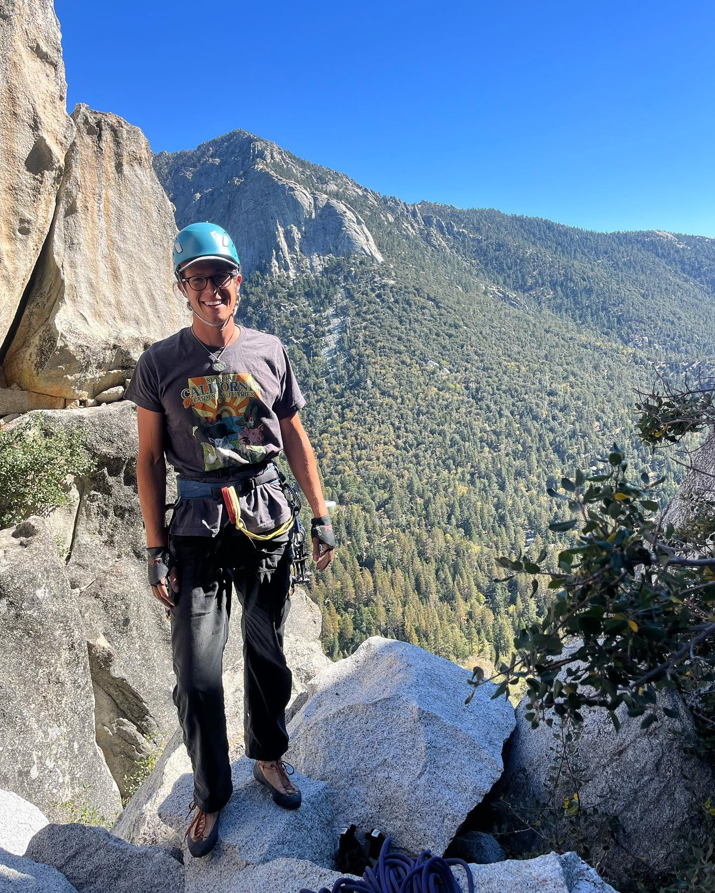

About
Side Quest
We believe some of life's most important lessons happen outside the classroom.
We believe some of life's most important lessons happen outside the classroom.
Side Quest Expeditions expands access to meaningful outdoor education for San Francisco public school students through progressive outdoor experiences that build confidence, leadership, community, environmental stewardship, and a lifelong connection to the natural world.
Side Quest Expeditions was created around a simple idea: young people should have access to meaningful outdoor experiences regardless of their family's ability to pay for them.
We begin close to home, introducing students to the incredible public lands and outdoor spaces surrounding San Francisco. As students gain experience, confidence, and outdoor skills, those opportunities grow into larger adventures including camping, backpacking, rock climbing, and whitewater rafting.
Our goal is not simply to take students outside. We want young people to develop the skills, confidence, relationships, and sense of belonging that allow them to see the outdoors as a place where they belong.
Side Quest Expeditions is guided by a volunteer board and experienced outdoor educators committed to expanding access to meaningful outdoor experiences for young people.

Kyle is an outdoor educator, river guide, and educator with more than a decade of experience leading people in outdoor environments.
His background includes whitewater rafting, backpacking, rock climbing, challenge course facilitation, outdoor leadership, staff training, and wilderness risk management. He has led programs ranging from local day experiences to multi-week wilderness expeditions.
Kyle holds a degree in Communication with a focus on small-group communication and conflict resolution, as well as formal education in wilderness studies. His work in outdoor education and public schools ultimately led to the creation of Side Quest Expeditions.

Geoffrey serves as Vice Chair of the Side Quest Expeditions Board of Directors, helping guide the organization's growth, governance, and long-term mission.

Klare serves as Secretary of the Side Quest Expeditions Board of Directors and supports the organization's governance, planning, and continued development.
Our programs are led by experienced outdoor educators and guides who bring technical outdoor skills, risk management experience, and a commitment to creating supportive learning environments.


Challenge, reflection, and adventure help students discover their strengths, capabilities, and confidence.
Shared experiences create opportunities for teamwork, communication, trust, and stronger communities.
Understanding the landscapes, communities, histories, and ecosystems around us creates a deeper relationship with the places we explore.